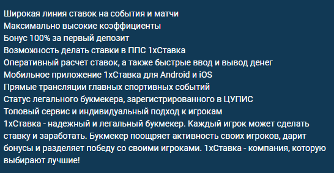
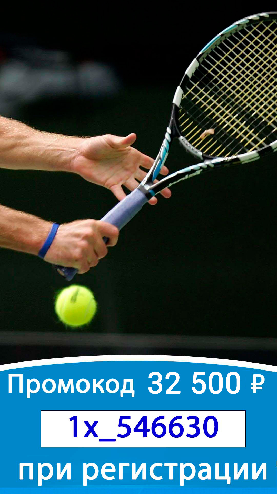
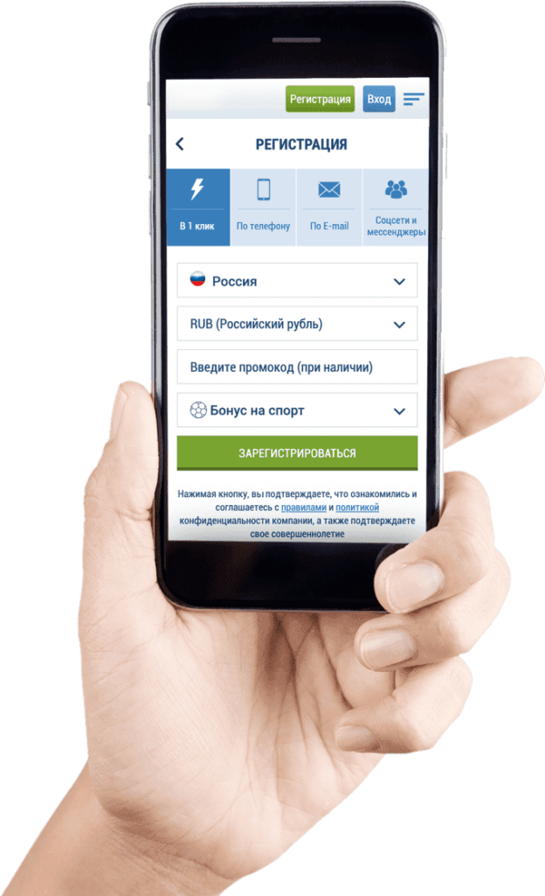
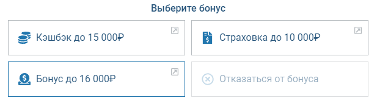

Промокод 1xbet: инструкция по бонусу до 32 500 ₽ за регистрацию
Промокод 1xbet на сегодня — 1x_546630: код вводится в поле регистрационной формы и повышает приветственный бонус со стандартных 100% до 130% первого депозита — максимум 32 500 ₽ вместо 25 000 ₽. Отыгрыш — экспрессами от 3 событий с коэффициентом от 1.40 за 30 дней, минимальный депозит — от 100 ₽.
Что даёт промокод 1xbet при регистрации
Промокод 1xbet — это комбинация символов, которая повышает приветственный бонус на первый депозит: со стандартных 100% до 130% от суммы пополнения. Потолок вырастает с 25 000 рублей до 32 500 ₽ — это и есть разница между регистрацией с кодом и без него. Деньги приходят не на основной, а на отдельный бонусный счёт букмекера.

| Параметр | С кодом 1x_546630 | Без кода |
|---|---|---|
| Размер бонуса | 130% депозита | 100% депозита |
| Максимальная сумма | 32 500 ₽ | 25 000 ₽ |
| Минимальный депозит | от 100 ₽ | такой же |
| Куда начисляется | бонусный счёт | бонусный счёт |
| Кто получает | только новые игроки | только новые игроки |
Начисление автоматическое: после пополнения счёта сумма появляется в личном кабинете БК в течение нескольких минут. Никаких заявок в поддержку оператора писать не нужно. Промокоды действуют только на первое пополнение — за повторные депозиты 1хбет начисляет бонусы уже по другим акциям. Промокод и базовый бонус БК не суммируются с другими welcome-предложениями: одна регистрация — одна приветственная акция.
Рабочий промокод 1xbet на сегодня: как проверить актуальность

Промокод 1xbet на сегодня — самый частый запрос по теме, и не случайно: комбинации у букмекера сменяемые, вчерашний код мог уже не действовать. Рабочие промокоды распространяются бесплатно — платных кодов не существует, а «эксклюзив за деньги» — признак мошенников. Написания 1xbet, 1 xbet и 1хбет — одна и та же БК: промокод 1хбет на сегодня совпадает с кодами на 1xbet в латинском написании.
Промокод 1x_546630 с этой страницы мы проверяем сами: последняя проверка — 3 июля 2026 года, форма регистрации приняла его без ошибки, повышенный процент начислился. Как проверить актуальность любого кода на практике — 3 признака:
- Дата рядом с кодом: у добросовестных партнёров стоит месяц и год (июль 2026), а не «вечное» обещание.
- Список промокодов обновлён недавно: у страницы есть дата правки, суммы совпадают с текущими правилами акции, а не с устаревшими потолками вроде 5 000 ₽.
- Форма регистрации принимает код без ошибки «неверный промокод» — финальная проверка всегда на стороне БК.
Где взять рабочий код и как ввести его в форме
Рабочий промокод 1xbet уже на этой странице: 1x_546630 — партнёрская комбинация, действующая на момент публикации. Такие коды букмекер выдаёт обзорным и прогнозным порталам напрямую, «вечных» комбинаций у оператора нет, наборы символов периодически обновляются. Одинаковые промокоды на нескольких площадках — норма: партнёры 1хбет берут их из одного пула БК.
Как использовать промокод при регистрации 1xbet на сегодняшних условиях — 4 шага, меньше минуты:
- Откройте форму регистрации на сайте или в приложении БК.
- Выберите способ: в 1 клик, по телефону, по e-mail или через соцсети — поле кода есть во всех 4 вариантах.
- Вставьте комбинацию в строку «Введите промокод» без пробелов.
- Завершите регистрацию и пополните счёт от 100 ₽ — бонус придёт автоматически.
| Вид регистрации | Где поле кода | Код |
|---|---|---|
| В 1 клик | под выбором валюты | 1x_546630 |
| По телефону | после подтверждения номера | тот же |
| По e-mail | в развёрнутой форме | тот же |
| Через соцсети | на шаге подтверждения | тот же |

Условия отыгрыша: вейджер x5, сроки и коэффициенты
Бонусные деньги нельзя вывести сразу — сначала их отыгрывают. Правила букмекера требуют 5-кратный оборот суммы бонуса, причём засчитываются только экспресс-ставки.
| Условие | Значение |
|---|---|
| Вейджер | x5 от суммы бонуса |
| Тип ставок | только экспрессы |
| Событий в купоне | минимум 3 |
| Коэффициент каждого события | от 1.40 |
| Срок | 30 дней с момента начисления |
| Ординары | не засчитываются |
Пример расчёта: при бонусе 6 500 ₽ оборот составит 32,5 тыс. ₽ ставками-экспрессами. Если хотя бы одно событие в купоне идёт с коэффициентом ниже 1.40, вся ставка не учитывается в отыгрыше. Перед ставкой переключите тип баланса на бонусный в купоне — иначе оборот пойдёт с основного счёта. Вейджер касается только бонуса: сам депозит остаётся вашим и доступен для обычных ставок без ограничений БК.
Отыгранная часть бонуса переводится на основной баланс и становится доступной к выводу после верификации: понадобится паспорт и подтверждение способа оплаты. Пройти проверку документов у БК лучше заранее — так бонусный выигрыш не зависнет на этапе кассы.
Бонус за регистрацию без промокода: что даёт БК
Бонус за регистрацию у 1хбет начисляется и без кода — стандартные 100% на первый депозит до 25 000 ₽ после согласия на участие в бонусной программе в личном кабинете. При регистрации 1хбет предлагает выбрать тип приветственного пакета — спортивный или казино; сменить выбор после первого депозита нельзя. Комбинация с этой страницы лишь поднимает процент и потолок; сама механика — минимальный депозит, автоматическое начисление, вейджер x5 — не меняется.

Что дают за регистрацию помимо денежного бонуса: доступ к витрине промокодов за промо-баллы, участие в страховке экспрессов и акции «серия неудач» — до 500 € за 20 проигранных пари подряд. Баллы БК начисляет за обычные ставки, а тратятся они на купоны бесплатных ставок в разделе акций. Из регулярных предложений заметна «Счастливая пятница» — бонус на депозит по пятницам с укороченным отыгрышем за 24 часа; условия недели сверяйте в разделе акций 1xbet.
| Вариант старта | Бонус | Условие |
|---|---|---|
| Регистрация с кодом 1x_546630 | 130% первого депозита | код в форме + минимальный депозит |
| Регистрация без кода | 100% первого депозита | согласие на бонусы + минимальный депозит |
| Отказ от бонусов | 0 ₽, но без вейджера | свободный вывод с первого дня |
Третья строка таблицы — легальный лайфхак: если отыгрыш не нужен, от бонуса можно отказаться при регистрации и выводить выигрыши без ограничений бонусной программы.
Бонусный счёт: как использовать и можно ли вывести
Вывести деньги с бонусного счёта напрямую нельзя — это главное правило программы лояльности БК. Бонусный баланс отображается в личном кабинете рядом с основным, и пока на нём есть активные средства, система списывает ставки сначала с него.
Как пользоваться бонусным балансом без ошибок:
- чтобы поставить бонус, выберите бонусный тип баланса прямо в купоне онлайн-ставки — для отыгрыша должен быть выбран именно он;
- не запрашивайте вывод до завершения вейджера — заявка отклонится, а в отдельных случаях оператор аннулирует бонус;
- остаток и прогресс отыгрыша видны в разделе бонусов кабинета — сверяйтесь с ним, а не считайте в уме;
- неотыгранный остаток по истечении 30 дней сгорает автоматически.
После выполнения вейджера бонусные средства переводятся на основной счёт — с него доступен вывод любым способом кассы: на карту, СБП или электронные кошельки, после верификации аккаунта.
Фрибеты и купоны на бесплатную ставку
Фрибет — бесплатная ставка от букмекера: игрок ставит купон фиксированного номинала, а при выигрыше получает чистую прибыль без тела ставки. У 1хбет фрибеты раздаются точечно: в день рождения, за активность по промо-баллам, в персональных предложениях кабинета — постоянного «фрибета за регистрацию всем» у БК нет.
| Источник фрибета | Номинал | Как получить |
|---|---|---|
| День рождения | индивидуально, обычно 500–5 000 ₽ | письмо/уведомление от БК |
| Витрина промокодов | по курсу промо-баллов | накопить баллы ставками |
| Персональные акции | от 100 ₽ | активность в кабинете |
Купоны бесплатно из витрины — рабочий способ получать бесплатные ставки регулярно: баллы капают за обычные пари, а курс обмена виден в витрине заранее. Выигрыш с фрибета приходит на основной счёт, если акцией не задан отдельный отыгрыш — условия каждого купона читайте в его карточке.
Бонусы казино и фриспины: чем отличается отыгрыш
Казино-раздел 1xbet (1xBet Casino) живёт по своим правилам: приветственный пакет, фриспины и промокоды на слоты отыгрываются не экспрессами, а ставками в играх, и вейджер там заметно выше спортивного — типично x25–x35 против x5. Играть бонусом можно в слотах из списка акции; выигрыш с фриспинов зачисляется бонусными средствами до полного отыгрыша. Призы и дополнительные бонусы казино разыгрываются в турнирах слотов — расписание видно в разделе акций, там же публикуются актуальные на сегодня казино-коды.
| Параметр | Спортивный бонус | Бонус казино |
|---|---|---|
| Вейджер | x5 | обычно x25–x35 |
| Чем отыгрывать | экспрессы от 3 событий, кф от 1.40 | ставки в слотах из списка |
| Срок | 30 дней | по правилам конкретной акции |
| Куда приходит выигрыш | бонусный → основной счёт | бонусный → основной счёт |
Один и тот же промокод на спорт и казино не действует: у разделов разные акции и разные поля активации. Код 1x_546630 привязан к спортивному приветственному пакету — прежде чем играть в слоты, проверьте в правилах, к какому разделу относится ваша акция: ошибка раздела не лечится поддержкой задним числом.
Чем промокод отличается от фрибета и других акций
Промокод 1xbet усиливает депозитный бонус, а фрибет — это бесплатная ставка фиксированного номинала без пополнения в момент использования. Механики разные, и путать их не стоит: по купону вы получаете процент к депозиту, по фрибету — право на одну ставку заранее известной суммы.
| Механика | Промокод | Фрибет | Кэшбэк |
|---|---|---|---|
| Требует депозит | да, от минимального | как правило нет | нет |
| Что даёт | повышенный % к пополнению | ставку номиналом | возврат % проигрыша |
| Максимум | до 32,5 тыс. ₽ | обычно 500–5 000 ₽ | зависит от акции |
| Отыгрыш | x5 экспрессами | выигрыш минус номинал | часто без отыгрыша |
| Кому доступно | новым игрокам | по акциям БК | активным игрокам |
Помимо приветственного бонуса 1хбет параллельно ведёт другие программы: страховку экспрессов, бонус за серию из 20 неудачных пари (до 500 €), подарки в день рождения. Все они не конфликтуют с приветственным предложением — использовать код это не мешает.
Почему промокод не сработал: мифы и реальные причины
Половина жалоб «код не работает» упирается в мифы, вторая — в нарушение условий. Разберём и то и другое с цифрами.
Мифы, из-за которых ждут невозможного:
- Бездепозитного промокода 1xbet не существует — любой бонус оператора требует пополнения от 100 ₽; обещание «деньги без депозита» на сторонних сайтах — приманка.
- «Промокод 6500» и другие коды с фиксированной суммой в названии — легенда: комбинация задаёт процент к депозиту, а не выдаёт 6 500 ₽ живыми деньгами.
- «32 500 ₽ фрибетом без условий» — не существует: это потолок депозитного бонуса по коду, он приходит на бонусный счёт и требует отыгрыша x5 за 30 дней.
- «Код удваивает любой выигрыш» — нет, комбинация влияет только на размер приветственного начисления.
Реальные причины отказа формы или отсутствия начисления:
| Причина | Что проверить |
|---|---|
| Код просрочен | дату публикации источника |
| Повторная регистрация | бонус положен только новым игрокам, 1 аккаунт |
| Счёт в криптовалюте | BTC/USDT-счета не участвуют в бонусной программе 1хбет |
| Депозит ниже минимума | минимальный порог — 100 ₽ |
| Код введён с пробелом | вставляйте комбинацию без лишних символов |
| Поле пропущено при регистрации | добавить код после создания аккаунта нельзя |
| Код от другого раздела | спортивный код не работает в казино и наоборот |
Наш тест: активировали код 1x_546630 и замерили сроки
Мы проверили механику на практике 3 июля 2026 года: зарегистрировали аккаунт с кодом 1x_546630, пополнили счёт на 5 000 ₽ и зафиксировали каждый шаг по таймеру.
| Этап | Наш замер |
|---|---|
| Регистрация с кодом | 2 минуты 40 секунд |
| Зачисление депозита 5 000 ₽ | моментально |
| Начисление бонуса 6 500 ₽ по коду | 2 минуты |
| Первый засчитанный экспресс (3 события, кф 1.44–1.71) | тем же вечером |
| Прогресс отыгрыша за неделю | 9 300 ₽ из 32 500 ₽ оборота |
Выводы теста: заявленные 130% по коду начислили точно и быстро — против 100% без кода разница на нашем депозите составила 1 500 ₽. А вот вейджер x5 за 30 дней — задача для регулярных ставок: при среднем купоне 700 ₽ понадобится около 46 засчитанных экспрессов. Скриншоты замеров — в галерее страницы.
Сравнение с приветственными пакетами других БК
Главное отличие стартового пакета 1хбет — процент к депозиту вместо фиксированного фрибета: большинство легальных БК России дарят новичку бесплатную ставку заранее известного номинала, а здесь размер начисления зависит от суммы пополнения. Чужие коды не приводим сознательно — сравниваем механику, а не цифры недельных акций.
| Параметр | 1хбет по коду | Типичный формат легальных БК (Фонбет, Winline, Лига Ставок) |
|---|---|---|
| Формат бонуса | процент к депозиту | чаще фрибет фиксированного номинала |
| Нужен ли депозит | да | часто нет — фрибет за регистрацию с идентификацией |
| Потолок | растёт вместе с депозитом | фиксирован условиями акции |
| Отыгрыш | x5 экспрессами | обычно однократный прокрут фрибета |
| Правовой статус | лицензия Кюрасао, вне реестра РФ | реестр легальных БК, выплаты через ЕЦУПИС |
Из таблицы не следует, что вариант с кодом всегда выгоднее. Фрибет легальной БК не требует рисковать собственным депозитом, а выигрыш выводится после идентификации через ЕЦУПИС — с налоговым агентом в лице букмекера. Депозитный процент выгоден тем, кто и так планировал пополнение и готов месяц собирать экспрессы; номиналы и условия конкурентов меняются от акции к акции — сверяйте их на официальных сайтах БК.
Плюсы и минусы бонуса по коду
Промокод 1xbet — а точнее предложение по коду 1x_546630 — имеет четыре ощутимых плюса и три минуса; взвесьте их до первого депозита.
Плюсы:
- +30% сверх стандартного начисления — легальный внутри правил БК способ поднять потолок приветственного пакета;
- низкий порог входа: бонус начисляется даже на депозит в сотню рублей;
- автоматическое начисление за пару минут — подтверждено нашим тестом;
- поле кода есть во всех 4 способах регистрации, включая приложение.
Минусы:
- вейджер x5 только экспрессами от 3 событий — ординары в оборот не идут;
- жёсткий срок 30 дней без продления: не успели — остаток сгорает;
- офшорная лицензия: спорные ситуации решаются с саппортом, а не с регулятором РФ.
Когда бонус не подходит: если вы ставите реже 2–3 раз в неделю — при среднем купоне 700 ₽ на оборот нужно около 46 засчитанных экспрессов за месяц; если играете только ординарами — оборот не соберётся в принципе; если планируете быстро выводить — до конца отыгрыша бонусная часть заблокирована. В этих трёх сценариях выгоднее отказаться от бонуса при регистрации и играть без вейджера с первого дня.
Методология, источники и ответственная игра
Данные страницы собраны 3 июля 2026 года из правил акций на сайте оператора и сверены по двум независимым обзорам БК. В старых обзорах встречается устаревший потолок «до 120%» — актуальная партнёрская механика даёт 130% по коду против 100% стандартных, обе цифры мы проверили тестовой регистрацией; действующую редакцию сверяйте в правилах бонусной программы оператора. Замеры из раздела теста — собственные, с фиксацией времени по скриншотам. Следующее плановое обновление — август 2026.
Юридический статус: букмекер 1xbet работает по лицензии Кюрасао и не входит в реестр легальных БК РФ — учитывайте это при выборе площадки для ставок. Доступ к сайту БК разрешён только совершеннолетним: 18+. Верификация аккаунта у 1xbet обязательна перед выводом — без подтверждённой личности выигрыш не отдадут. Ставки на спорт — развлечение с риском потери денег, а не способ заработка: устанавливайте лимиты на депозит и время, при признаках зависимости обращайтесь к принципам ответственной игры.
Частые вопросы о промокодах и бонусах
Где взять промокод на 1xbet?
Актуальная на сегодня комбинация опубликована на этой странице — 1x_546630; код бесплатный, а главный признак актуальности любого кода — дата проверки рядом с ним.
Можно ли вывести бонус сразу?
Нет: вывод открывается только после полного отыгрыша — 5-кратного оборота экспрессами за 30 дней, с переводом средств на основной счёт.
Сколько раз можно использовать код?
Один раз на игрока: комбинация действует только для нового аккаунта, повторная регистрация нарушает правила БК и блокирует начисление.
Работает ли купон 1xbet в приложении?
Да, поле для комбинации есть в форме регистрации на сайте, в мобильной версии и в приложениях — механика бонуса 1хбет одинаковая на всех платформах.
Можно ли ввести промокод после регистрации?
Нельзя: строка для комбинации есть только в регистрационной форме, задним числом код не применяется — действующим клиентам доступны акции кабинета.
Что выбрать: спортивный пакет или казино?
Тип приветственного пакета фиксируется при регистрации и не меняется после первого депозита; комбинация 1x_546630 усиливает именно спортивный вариант.
Что будет, если не отыграть бонус за 30 дней?
Неотыгранный остаток сгорает вместе с прогрессом оборота; продлить срок поддержка оператора не может.
Дают ли промокоды действующим игрокам?
Приветственные промокоды — нет, только новым: активным клиентам букмекер предлагает кэшбэк, страховку экспрессов, витрину купонов за промо-баллы и персональные акции в кабинете.
Как получить фриспины казино?
Через акции казино-раздела: приветственный пакет, турниры слотов и персональные предложения; выигрыш с фриспинов приходит бонусными средствами и требует отыгрыша по правилам акции.
Нужна ли верификация для бонуса?
Для начисления — нет, а вот перед выводом выигрыша 1хбет потребует подтвердить личность: паспорт и способ оплаты, обычно проверка занимает до 48 часов.